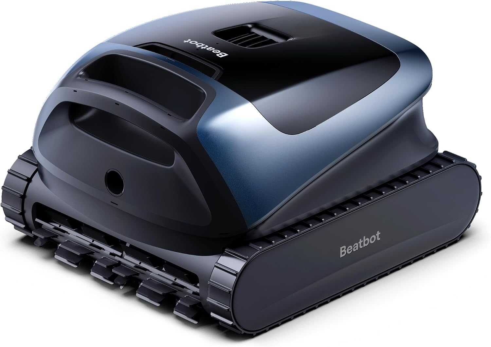

Pick 1 - Best Overall
Beatbot Sora 30 Pool Vacuum
Best for larger above-ground or in-ground pools.
The Sora 30 is the most ambitious option here, with published support for floor, wall, waterline, and platform cleaning plus a long listed runtime.
Published specs: 300-minute runtime, 6,800 GPH power, 5L capacity, smart parking, coverage up to 3,229 sq. ft.
Check Sora 30 Price